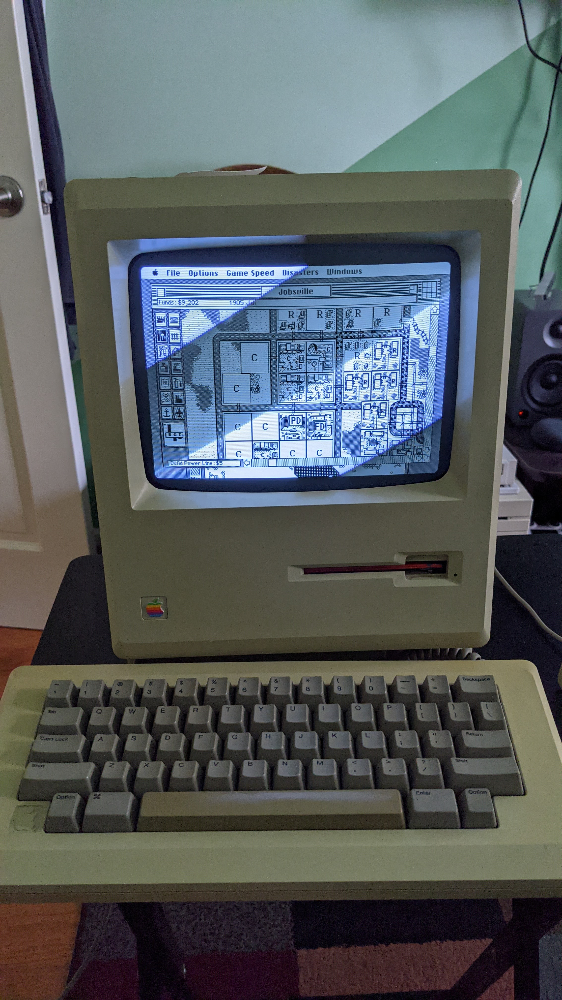
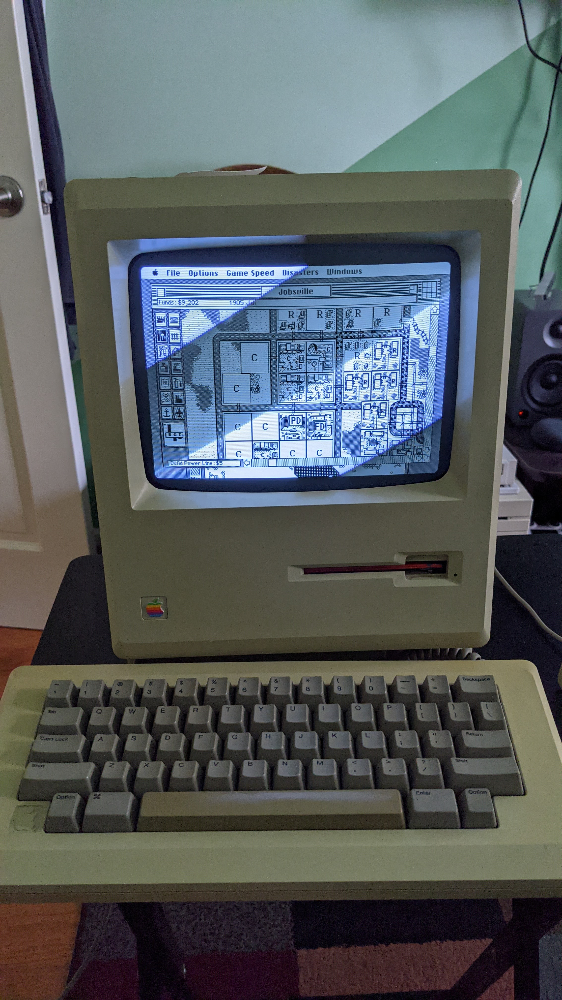

Specs
Year: 1984
CPU: Motorola 68000 @ 8 MHz
GPU: Some integrated video controller
RAM: 1 MB
HDD: None!
Other Storage: 800k Floppy Disk Drive
OS: System 2, System 4
The Macintosh 512k was released in 1984 as an upgrade to the original Macintosh (retroactively called the Macintosh 128k to differentiate it from this machine). In some ways it's the machine Apple should have released to begin with, the extra RAM allowed it to run more software, and help the Macintosh become a serious business machine to compete with IBM. It seems laughable nowadays, but in 1984 a computer with a GUI was a big deal, most people were using either BASIC or some command line on their computers. There is no built-in hard drive, and nowhere to even mount one in the case, you'd have to get an external one if you wanted a fixed drive.
I acquired my machine in September 2020, after constantly telling myself I wouldn't get one. While it doesn't have an internal hard drive, it does have an internal 9-inch CRT monitor, and that makes repairing this machine an absolute pain because the high voltage in a CRT could very well kill you if you don't know what you're doing. However, when I got it in the mail, everything seemed to be working just fine. Not only did the seller upgrade the RAM to a whole 1 Megabyte, but it was able to boot into the System 2 disk that came with it and I was able to have fun running MacWrite and MacPaint. Unfortunately this is where I realized the F and X keys on the keyboard no longer worked, so I'll have to look into that at a future time. Anyway, for fun I also tried to format a blank disk, and to my surprise it detected an "uninitialized" disk and formatted it just fine. Even more surprising, it appeared that the drive in the computer had been upgraded to an 800k floppy drive at some point, which makes writing disks for this computer much easier.
I then tried to get some games working on the Macintosh 512k (or 1M now I suppose). The only other Mac I had lying around that's old enough to support 800k disks but new enough that I could easily get files over to it is my Macintosh Quadra 950. I'll be talking about that machine on a different page, but needless to say, getting disks written for the Mac 512k required me to download the disk images on a modern computer, transfer them to a Mac that supports USB and AppleTalk (I was using a Titanium PowerBook G4 running Mac OS 9), unstuff the archive, transfer the files over the Quadra 950 over ethernet, where I could finally write the disks for the Mac 512k. But once the disks were written, I was able to boot System 4, which supports HFS so I could transfer data to and from the Mac 512k and the Quadra 950 easier, and run two games, Tetris and SimCity.
 

I must say the keyboard is really nice to type on, even after all these years. I really started to get into SimCity on this old machine. Despite the game's age and lack of features compare to a modern alternative like Cities: Skylines, I still managed to get sucked in and spend hours building a little city. I wanted to run different kinds of software to see what you could do with such a limited machine in the current year, but unfortunately, one night when I tried to load up my SimCity save file, the floppy drive suddenly failed to eject the disk and now it makes this horrible noise whenever I turn it on. So now my worst fears have been realized: I need to take this thing apart without killing myself on the CRT. Hopefully the disk drive just needs some lubricant or something, and not a new gear. Stay tuned for an update whenever I get around to repairing it!
If you want to see the machine in action before the floppy drive failed, check out this quick video I made!